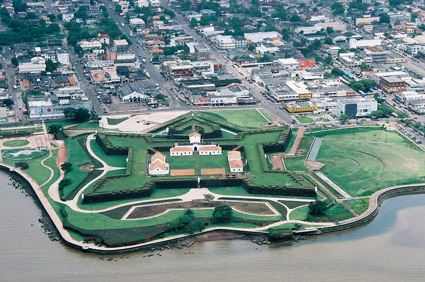
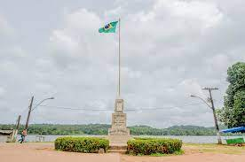

O Amapá, estado localizado na região Norte do Brasil, é conhecido por sua natureza exuberante, rica cultura indígena e pela presença da Floresta Amazônica. Embora seja um dos estados menos populosos do país, oferece uma variedade de pontos turísticos interessantes. Aqui estão alguns dos principais pontos turísticos do Amapá:
Bem-vindo ao Amapá


Macapá: A capital do Amapá é um ponto de partida comum para explorar o estado. Destacam-se o Marco Zero, um monumento que marca a linha do Equador; o Forte de São José de Macapá, uma antiga fortaleza colonial; e o Mercado Central, onde você pode encontrar produtos regionais, como artesanato e alimentos típicos.

Parque Nacional Montanhas do Tumucumaque: Localizado na fronteira com o Suriname e a Guiana Francesa, é o maior parque nacional do Brasil e uma das maiores áreas preservadas de floresta tropical do mundo. Oferece trilhas, cachoeiras e a oportunidade de observar uma rica variedade de flora e fauna.

Oiapoque: Cidade situada na fronteira com a Guiana Francesa, é conhecida por suas praias paradisíacas, como a Praia do Fazendinha. É também um ponto de acesso para a Reserva Indígena do Tumuc-Humac, onde é possível conhecer as tradições e a cultura dos povos indígenas da região.